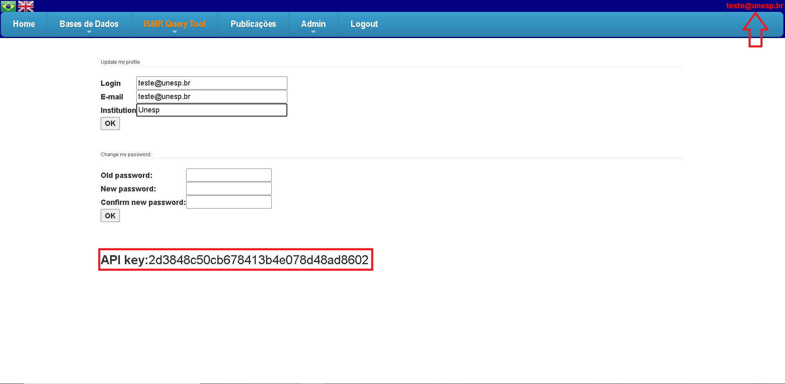
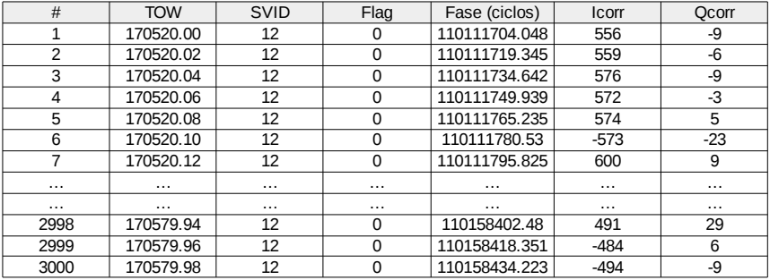

12. Specifications
The access authentication module was implemented in this latest version of the API. Now, to access the functionalities, a unique key is required, provided to each user of the tool. Your API key is provided when you access the tool and click on your user name (top right), as you can see in the following figure:
 Figure 12.0.1 - API Key Example
How to use this specification
- Parameters presented in plain text, the most of them, are mandatory.
- Parameters presented between brackets [ ] are optional and also independent from other parameters.
- Parameters presented in parenthesis are conditional (depend on the values of other parameters). Please, read the specification to check whether they might be either used or omitted.
12.1 ISMR data request
Base URL: https://ismrquerytool.fct.unesp.br/is/ismrtool/calc-var/service_loadISMR.php
Use this tool to download the data from the ISMR data table. This service demands one HTTP request by station. It returns all ISMR data tracked at the given time window.
| Parameter | Description | Example(s) |
|---|---|---|
| date_begin | Start date/time of the dataset. Format YYYY-MM-DD hh : mm : ss | 2014-10-01 22:00:00 |
| date_end | End date/time of the dataset. Format YYYY-MM-DD hh : mm : ss | 2014-10-01 22:05:00 |
| (station) | Single numeric station id to be retrieved. Use only if stationName is omitted. | 5 8 |
| (stationName) | String station name (XXXX) to be retrieved. Use only if station is omitted. | PRU1 SJCU |
| mode | Output mode. | csv json |
Request examples
a) Five minutes of data from PRU1 station:
Example 12.1.1
b) Similar request based on station id and json output:
Example 12.1.2
12.2 High-rate (50 Hz) data
Base URL: https://ismrquerytool.fct.unesp.br/is/ismrtool/calc-var/service_loadHighRate.php
Use this tool to download high-rate data (50 Hz) as text files. Due to the large amount of data and huge processing/storage required to convert the binary files (.sbf) to text files at 50 Hz, this service demands a single HTTP call for each PRN and for each monitoring hourly file from a given station.
| Parameter | Description | Example(s) |
|---|---|---|
| timestamp | A single timestamp (date/time) inside the date-time range of the file. Format YYYY-MM-DD hh : mm : ss | 2014-10-01 22:01:00 |
| (station) | Single numeric station id to be retrieved. Use only if stationName is omitted. | 5 8 |
| (stationName) | String station name (XXXX) to be retrieved. Use only if station is omitted. | PRU1 SJCU |
| data_type | Integer value for the signal type according to Septentrio's convention (see Table 1). | 0 3 |
| sat | SVID of the satellite according to Septentrio's convention (see Table 2). | 2 25 |
| mode | Output mode. | csv |
The most of the stations works with hourly files. Few stations works with 15-minutes files, for such stations this webservice is not supported yet. Users can look for the ISMR data in advance to check the satellites present in the dataset at a given time range.
The timestamp parameter will identify the corresponding raw file to make the 50 Hz conversion. Please, see the remarks below regarding the time ranges for the hourly bases files:
- Timestamp 2014-10-01 22:00:00 will load data from 22:00:00.00 to 22:59:59.98;
- Timestamp 2014-10-01 22:01:00 will load data from 22:00:00.00 to 22:59:59.98;
- Timestamp 2014-10-01 22:05:00 will load data from 22:00:00.00 to 22:59:59.98.
Table 1 (obtained from PolaRx5s Reference Guide, v.5.1.2) describes the code number for the available signal types. For example, the default configuration in the PolaRxS/PolaRx5s allows to retrieve 50 Hz data for the following signal types for a GPS satellite: 0 (L1/CA); 3 (L2C); 4 (L5).
Table 2 (obtained from PolaRx5s Reference Guide, v.5.1.2) describes the SVID (identificator of satellites in PolaRxS/PolaRx5s) receivers. For example, for the GPS satellites, the SVID=PRN.
Request examples
a) Request for one-hour of L1/CA high-rate data, satellite GPS 2, station PRU1:
Example 12.2.1
Output:
tow,svid,flag_obs_type,phase,Icorr,Qcorr
338400.00,2,0,115418414.046,510,9
338400.02,2,0,115418354.284,-506,1
338400.04,2,0,115418294.521,521,24
338400.06,2,0,115418234.758,-486,5
338400.08,2,0,115418174.997,-517,7
338400.10,2,0,115418115.236,481,-16
338400.12,2,0,115418055.478,-509,13
....
....
341999.90,2,0,107330519.800,-691,-3
341999.92,2,0,107330494.308,719,5
341999.94,2,0,107330468.816,-694,-5
341999.96,2,0,107330443.324,-692,3
341999.98,2,0,107330417.833,-709,6
Remark: one hour corresponds to 180000 lines in the 50 Hz output.
b) Similar request for one-hour of L2C high-rate data, satellite GPS 6, station PRU1:
Example 12.2.2
c) Similar request for one-hour of L5 high-rate data, satellite GPS 24, station PRU1:
Example 12.2.3
d) Similar request for one-hour of L1CA high-rate data, satellite SVID 136 (SBAS), station PRU2. Please, notice the signal type 24 on Table 1 for SBAS/L1CA signal:
Example 12.2.4

Figure 12.2.1 - Example of high-rate data (50 Hz)
12.3 Projected data (IPP points)
| Parameter | Description | Example(s) |
|---|---|---|
| date_begin | Start date/time of the dataset. Format YYYY-MM-DD hh : mm : ss | 2014-10-01 22:00:00 |
| date_end | End date/time of the dataset. Format YYYY-MM-DD hh : mm : ss | 2014-10-01 22:05:00 |
| [satellite] | Comma separated list of GNSS systems (case insensitive) to be included. If omitted, defaults to all satellites tracked by receivers. | gps GPS,GLONASS GPS,GLONASS,GALILEO,SBAS,BEIDOU,QZSS |
| (station) | Comma separated list of station ids to be included. Use only if stationName is omitted. | 5 5,6,8 |
| (stationName) | Comma separated list of station names to be included. Use only if station is omitted. | PRU1 PRU1,PRU2,SJCU |
| [filters] | Filters (SQL style) to be applied. Semicolon (;) separated list. | elev>=20; elev>10; s4>0.1; |
| aggregation | Choose none to consider "raw" project ipp data. | none |
| ion | Height (in units of km) of the ionospheric thin layer (usually between 350 and 450 km). | 350 400 |
| mode | Output mode. | csv json |
Request Examples
a) Ten minutes of GPS data for two stations (identified by ids 5,6) applying elevation mask filter:
Example 12.3.1
Output:
svid, lat, long, value, time_utc, station_id
G24, -24.551081188188, -52.956004713185, 0.044, 2014-10-01 22:00:00, 5
G15, -20.485846927774, -54.380930873625, 0.092, 2014-10-01 22:00:00, 5
G2, -18.6995221417, -49.653109044635, 0.08, 2014-10-01 22:00:00, 5
...
Column svid identifies the PRN and/or GNSS system. Numeric values in the column value corresponds to the chosen field in the HTTP request (in this example, it corresponds to the s4 index).
b) Identifying stations by names, including GPS and GLONASS data and more filters:
Example 12.3.2